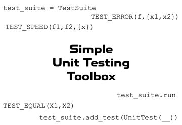

Simple Unit Testing Toolbox Documentation

Copyright © 2022 Tamas Kis
Contents
Installation
- Download the toolbox from File Exchange or https://github.com/tamaskis/Simple_Unit_Testing_Toolbox-MATLAB.
- Open the INSTALL folder.
- Double-click on Simple Unit Testing Toolbox.mltbx.
MATLAB will automatically perform the installation and add all the contents of the toolbox folder to the MATLAB search path.
Opening this documentation using the MATLAB Command Window.
To open the home page (this page) of the toolbox documentation in MATLAB, type the following in the Command Window:
doc_SUTT
To open the documentation of a specific function or class with name name, type the following in the Command Window:
doc_SUTT name
Test Suites
A test suite is a collection of unit test objects. When a test suite is run, it runs all of the individual unit tests, printing any diagnostic and/or error messages, along with some testing statistics.
- TestSuite Class defining a test suite.
Unit Test Objects
These unit test objects are used to create individual unit tests. All of the object below are subclasses of a generic UnitTest class, and call upon the unit testing functions listed in the next section below.
- TestEqual Unit test for array equality to a certain number of decimal places.
- TestNotEqual Unit test for array inequality to a certain number of decimal places.
- TestError Unit test for confirming that a function throws an error.
- TestNoError Unit test for confirming that a function does not throw an error.
- TestSpeed Unit test for confirming that one function is faster than another.
Individual Unit Testing Functions
These functions implement the core unit testing functionality. They are called on by the unit testing classes, but they can also be used individually, outside the scope of a full test suite framework.
- TEST_EQUAL Test if two double arrays are equal up to a desired number of decimal places.
- TEST_NOT_EQUAL Test if two double arrays are NOT equal up to a desired number of decimal places.
- TEST_ERROR Test if an error is successfully thrown.
- TEST_NO_ERROR Test to ensure an error is NOT thrown.
- TEST_SPEED Test if one function is faster to evaluate than another.
- TIME_EVALUATION Time the evaluation of a function.